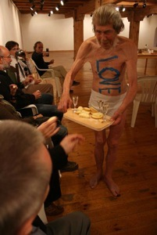

ADINA BAR-ON (at the Center of Contemporary Arts, Warsaw, Poland)
Jan Lubicz Przyluski: During this performance dividing space like in the pictures of Muybridge, pictures of the steal and the movement. Did you think about it, that there are stages of movement, when you divide the...
Adina Bar-On: Yes, I do. I can think of that, but I know that when you do a full movement it has a purpose, like (00:40 gest dzielenia?) But if I do a partial movement than I am not purpose oriented, function oriented and the meaning is different, it doesn’t have practical purpose. To break up movement is very interesting. But I do that in order to have the sensation of the steal, of really not having purpose of time, having a sense of suggestion, to suggest.
Suggest what?
Not to have specific statement, not to be text like a text. It becomes like you brake up sounds in poetry, like when I’m sp s sp sp speak to give the phonetic, to give the rhythm. So if I break up a movement I give the movement qualities, which they don’t have in life. In life a movement is to create action, a purposeful action. To pick up a cup, to seat down, to take my bag, to turn my head to look at you, to turn my head away not look at you. But if I do the movement and you are there, but I’m not looking than I let it gain other meanings, that are innate in it, that are inborn in it, but which we are not conscious of. Like in painting. When we paint a tree green, but we bring out the colours, we bring out form of growth, we bring out the proportion to the environment.
But what is the connection with... in painting is nature what you observe and during the performance...
I’m nature too.
So it’s your own nature?
It’s human nature. It’s human movement. The body movement, the body expression. The abstraction of the behaviour. Of behaviour, not movement.
How much you prepare before performance?
A lot, months.
To observe the movement?
To practice it. To work it out. To study it.
To study also the body?
I do it. That‘s why I have to go to the gallery to work. Because the space is different there. And I have to also take in 03:51 account space and where the audience will be in relation to me.
...
I wanted to start to ask you when you’re about to have the performance, because it’s certain state.
It will start in a minute, when I will finish my coffee. I will go and clean the chairs and speak to the lady and I start working, just to see. I have some ideas of how to use the space, which might be correct creatively. And when I feel confident I will go to my room, I‘ll get dressed. Than I’ll come back, stop working.
How do you feel that it’s not so close to concept, conceptual work?
It’s very conceptual. Look at it today. You will have a different point of view, because you will be close. See what I’m doing with these plaques. And see what happens, what surprises, what changes. You will see it. It’s very conceptual.
What I am interested in performance is what you do in your inner work and what is the expression. For example Zbyszek is talking about the contact with the audience very often, also about inner work. What is the relation between the inner work and the outer work?
(I’m not now in the position to talk about it, because in a few minute I’ll have to go. But I’m... ) All the time it is very much connected to the art, to the physical space and the architecture and to myself . I’m not doing it for myself. The performance has no value if there’s no audience. And it’s not even audience , people other than myself were there. It is meaningful because of that. If you will put yourself into trying to feel what is happening, to use your intuition, than there will be communication. Not only between you and what I’m doing. Between you and me. I mean: I exist because I’m doing; thinking you will read my thoughts, you will read my actions, you will read my expression, you will read my sense of time and you will participate, you will be affected by it. In many ways you will think your own thoughts, you will object, you will think second thoughts. You don’t only have to feel thoughts of empathy. For sure not in this performance. This performance I hardly look at you, I’m all the time arranging. But it’s a rhythm, it’s an intensity. I feel you in back of my back, I feel you in front, I feel you. I am showing. I’m unfolding. I’m all the time unfolding. Like a kaleidoscope. I’m unfolding the squares, I’m arranging them, something comes up – the photo, disappears and x-comes. I rest. Is my rest not being there, I’m even more there. I am separating you, taking apart. It’s something about the kaleidoscope of time occurrences in a symbolic way, in a conceptual and also probably in a physical way. That’s what I want to see – what they can do. This time I wanted Ewa to explain it, I really don’t want the audience to come and seat and wait for me. I’m doing it for three hours so people can come, stay as much as they want, go and come back, not come back. So that it is much more like I’m a garden of thoughts than...
But do you work with these thoughts or you occupy and carry certain thoughts with you for long time and work them out during the performances?
Yes. Definitely.
Is it possible to name these, maybe not subjects...
This performance is called „Sentenced to life“. It means like „sentence“ – linear, „to life“ and also maybe judged to life. And I’m also making lines and breaking them up and it’s always the same blocks that make different arrangements. Like a floor maybe or a skim, a diagram. I don’t know [how to say]. Why am I crawling? Why am I (6:48) And the meaning of my movement. And there’s a photo of an old lady, and Zbyszek now also, coming up all the time and then disappear and coming up again. It‘s like (6:58) things always come back. It’s sort of a repetition where there seams to be chaos. And where there seams to be chaos maybe there is form. And this is what it is about. And the way I am working it is if I am automatic, it is kind of a work, almost like a worship, a worshipping.
Do you think it is possible to experience it this way, such a complicated connection when you don’t use...
Yes, because you experiences sensuality, poeticism. That’s what I’m saying. It is not that I kill a fish. You use your senses, the sense of order, the sense of disorder. It is about order, disorder, about arranging, it is how our mind work, how aesthetic works. We arrange things to make meaning, we make composition to make meaning. I am making composition, I am disorganising it. Life is that way too? Sometimes we have disorganization, but maybe it is a beginning of organization. Sometimes you think something is not important, but it is actually (?) way deep in you and it comes up again. You think you don’t want to be like your father, but actually you are exactly like him, you know. This is what it is. But you have to listen, you have to be in tune, you have to listen to the music to hear it. I’m not talking to you in the performance, I’m creating a new order, I’m creating a little life, I’m creating new rules for three hours to tell you a story. I’m talking about life. Life, death, sleep, fantasy, memory, order, disorder.
But when you start to talk about it in words, you bring in different context. That’s what I’m asking, about this relation of.. how it is possible to experience it so intensive, to experience this complexity of things that you are talking about right now if you don’t use words and you don’t know what Adina Bar-on prepared.
Because we are human beings. If I look into your eyes and you see that I am thinking that you are lovely you feel it. I don’t have to say it. How many times you say to somebody „I have to tell you again that I love you“? You know, man usually say that sentence. I don’t have to, you feel it. We feel, we don’t need to talk. It’s only one form of communication. Certainly performance art isn’t about talking. It is not textual, it is a visual language, a plastic language, a sensual language. Also in music. Do you have to know, that it s violent or it is symmetrical and beautiful, that there is metamorphose in the music? All sorts of things you hear. There‘s a lightness, there‘s a heaviness, staccato. And so in a performance.
When you started to do performance...
Thirty five years ago.
... I imagine that you didn’t have this notions, you didn‘t have this language.
I had a lot. I had a strong expression. Ability that God gave me, nature gave me. Ability to express myself, to be transparent. You can immediately see especially when I’m performing, probably in life too, but especially when I’m performing I’m very transparent. You can see everything. This is what I had. And I said I create a visual work in real time and real space. And it’s about being a human. And I think we have to finish. But we can continue after performance. I’ll be very verbal after the performance. I’ll be very happy to talk about it afterwards.
Great, because I’m very curious what is relation between language and what is (?)
I’m not trying say no to everything, but we can try.
Because once you are saying it is not a text and then that we read the performance.
We can read into it. I say that my performance... the individual, the audience is more aware of what he thought or felt in the performance and what I did. It makes you conscious of yourself more than of me. That’s why when people say that performance is narcissistic I get pissed off completely. Because it’s so much not about me. That is why I don’t show videos. Because when you see a video of the performance you are seeing Adina all the time. It makes me sick. But if you see a performance of Adina you are very much conscious of you and the people around you. Because of the reality. Reality is much more powerful. And things happens in the performance, which are you in between you an me – the performer and the audience, and the audience amongst themselves, which can never be captured.
But you agree to film it.
I will not object to you wanting to film it, but if I’m asked to show DVD I don’t show. And I don’t sell my DVDs. I agree for photos, cause they’re so far we moved from performance that I don’t care. It’s like images, so it cannot be compared, but the video was really problematic.
Because of the lack of presence?
Yes. One point of view of a technical makes it two dimensional. There’s so much dynamics, sometimes happens in my performance. Lately more and more. Like in Israel when I perform. It’s like... you can cut the air with knife, because it’s obvious about so many things that are crucial to life in Israel. And also this one is. You will see what you think afterwards.
...
JERZY BEREŚ, Rozmowa o sztuce performance
Jan Lubicz Przyłuski: Przede wszystkim chciałem zapytać o sposób, w jaki Pan się przygotowuje do swoich „manifestacji“. Co jest najistotniejsze i jak wygląda ten proces?
Jerzy Bereś: W całej twórczości, jak również w tak zwanych akcjach – ja je nazywam manifestacjami – muszę najpierw stworzyć sobie pewnego rodzaju raport o rzeczywistości. I manifestacja dopiero wynika z tego, że muszę jakoś zareagować na to, co ten raport o stanie rzeczywistości mi przekazuje. Dlatego całą swoją twórczość nazywam właśnie dialogiem z rzeczywistością. I w związku z tym, nie ma tu jakiegoś bezpośredniego przygotowania. Jeśli chodzi o środki, których używam, to one się stosunkowo mało zmieniają. Zawsze zachowany jest ten najprostszy sposób, najprostszy język. Użyte jest, dajmy na to, jedno słowo czy jakaś sekwencja, zdanie, które jest najczęściej wypisane na ciele i staje się hasłem. Takie hasło przychodzi czasem na końcu, a czasem jest od początku. Poza tym, to narastały sytuacje, w których właśnie takiego, a nie innego języka używam. Bo jest na przykład różnica między akcją, jaką wykonuję na rynku w Krakowie, czy gdzieś w kameralnych warunkach, w jakiejś galerii czy też świetlicy. I może stąd jest taki duży rozziew międy środkami, których używam. No, płonęły nawet ogniska i był ogień w zamkniętych pomieszczeniach, ale najefektowniej wychodziło to na otwartej przestrzeni, na przykład na rynku w Krakowie.
Czy w takim razie, mówiąc o raporcie o stanie rzeczywistości i o dialogu z rzeczywistością, zawsze przygotowuje Pan pewien swój sąd na temat tej rzeczywistości i manifestacja jest obrazem tego sądu?
Czy to jakiś osąd rzeczywistości czy też rodzaj jakiegoś protestu, jakieś ustosunkowanie się do otaczającej rzeczywistości. To może dotyczyć różnych dziedzin: czy to jakiejś ogólniejszej refleksji, czy też konkretnej politycznej, czy też nawet dialogu ze sztuką lub konkretnymi artystami. Robiłem takie dialogi najpierw z Duchampem. Potem był spór, w którym chodziło o sytuację, kiedy już zdemaskowałem to, że Duchamp właściwie zgodził się na fetysz. Natomiast jeśli chodzi o taką manifestację na rynku w Krakowie, to była adresowana do sytuacji, jaka w tamtym czasie była jakby na dłoni. Bo to były ogniska, które miały następujące tytuły wypisane na rynku: Ognisko Nadziei, Ognisko Wolności, Ognisko Godności, Ognisko Miłości i Ognisko Prawdy. To działo się tuż przed stanem wojennym czyli w 81 roku. Wtedy ta manifestacja korespondowała w sposób oczywisty z otaczającą rzeczywistością. No i dramatyzm chwili, bo to było półtora tygodnia przed stanem wojennym. A równocześnie była bardzo optymistyczna, ponieważ korespondowała z tym, co proponowała wtedy „Solidarność“, to uniesienie społeczne, etyczne. I to było bardzo wyraźne, jeśli chodzi o użycie języka. Tłumy ludzi nagle zebrały się na pustym rynku. Wtedy nie było jeszcze takiej sytuacji, która jest obecnie, gdzie tłumy są zawsze i niejednokrotnie odbywa się jakieś targowisko. To były czasy, w których właściwie rynek był pusty. I nagle tłum ludzi, nad którym trudno było zapanować. Ale jak zacząłem malować, to ludzie ustawili się w piękny krąg. Ognisko zadziałało jakąś taką magią.
A czy Pan wykorzystując takie słowa, takie hasła, które są z porządku bardzo wzniosłego – są to słowa pisane z dużej litery czy całkowicie pisane dużymi literami – czy Pan widzi w swojej roli jako artysty jakąś konieczność tego, żeby podnosić takie właśnie słowa, nie inne, przypominać je i wnosić w rzeczywistość społeczną? W jaki sposób widzi Pan swoją rolę, biorąc pod uwagę hasłą, jakie Pan przywołuje?
Pod tym względem to była szczególna manifestacja. W innych były inne słowa. Jak na przykład TEST, gdzie przywoływałem to, że po prostu coś testuję. To nie było już żadnym wzniosłym hasłem, tylko taką informacją dla ludzi. Innym razem był TOAST. Było Więc wyraźnie powiedziane, że na końcu akcji nastąpił toast, wypicie wspólnego toastu. Różne hasła były i każde właściwie z czasem stawało się tytułem. Tutaj zachodził pewien proces, bo hasło wypisane w trakcie akcji miało zaistnieć już w czasie akcji, natomiast nie mogło być tytułem na zaproszeniu na przykład.
A czy w tych manifestacjach politycznych …
No dobra, nawet manifestacja polityczna. I tutaj rok czy półtora roku temu, kiedy właściwie jeszcze był PoPiS – taka dwuznaczność powstała – na swoim ciele napisałem POPIS. Odnosiło się to równocześnie do otoczenia i sytuacji politycznej, jaka była w tym czasie, ale stanowi też słowo niezależne od tego. Każda akcja jest swego rodzaju popisem. Nie wszystko zawsze było takie wzniosłe i używało jakiegoś patosu. [dotąd +- zredagowane]
A wracając do tego z perspektywy czasu, kiedy w jakiś sposób komentuje się czy pisze się o tych akcjach politycznych, szczególnie o tej przed stanem wojennym, jako pewnym znaku zapowiedzi, pewnej akcji wręcz profetycznej.
No to mogę powiedzieć, że jedną z wyjątkowych prac, które zrobiłem, które powstały w czasie manifestacji to są Przepowiednie. Przepowienia Pierwsza, z której dokument rzeczowy został później zniszczony, w Foksal się odbyła na początku roku 68go. Pierwszego marca w Krzysztoforach odbyła się Przepowiednia Druga i tam w trakcie akcji powstała wystawa uzupełniona zdjęciami już po akcji. Ale po samej akcji zostały konkretne materialne obiekty, bo na środku galerii stał taki chłopski wóz pełen takich łupek drewna opałowego. To drewno potem w czasie akcji zostało ułożone w taki stos w ten sposób, że poprosiłem publiczność, żeby te belki układała pod moimi stopami kolejne warstwy i ja się unosiłem. Ja miałem na sobie płótno białe na szyi i czerwone na biodrach pod którym były jeszcze takie drewniane osłony biodrowe, które potem wmontowałem w cięciwę łuku. Cięciwa była z tego płótna białego i czerwonego. Miałem jeszcze strzałę i na jej końcu była płachta z napisem „Przepowiednia druga“. A na koniec przywiązałem do stosu na szczycie te osłony biodrowe. I w ten sposób włączyłem już tak dosłownie do tej kompozycji własne ciało. A w między czasie poprosiłem, żeby ludzie ten wóz, który już był pusty, pomalowali na niebiesko. I on się stał takim obiektem wystawowym. Równocześnie był czytany taki manifest, non stop ktoś tam czytał zawsze, a konkretnie wtedy to był Warpechowski. On zaczął, potem Agata (20:31), stwierdziła że źle czyta i oddałą z powrotem. I to zostało jako wystwa i w tej chwili znajduje się w Bunkrze Sztuki, gdzie tenże wóz jest pokazany, ten stos i ten manifest tam wisi. I właśnie pan pytał o tą pewną profetyczność, to tutaj się absolutnie zgadza. Część tego się nie zachowała, natomiast takie najważniejsze elementy zostały i w 1988 roku, w dwudziestą rocznicę, z powrotem zrobiliśmy taką Krzysztoforę właśnie. Tenże wóz zaistniał z tym stosem i rok później ta praca była prezentowana w Cieszynie w galerii, gdzie to odbyło się w kwietniu, czwartego czy któregoś, tak zwany koniec okrągłego stołu i ja mogłem na swoim ciele napisać „Przepowiednia Druga spełnia się“. I faktycznie ja nawet sam dopiero po 1989 roku sobie uświadomiłem, że ta przepowiednia sprawdziła się na tyle przez to włączenie fizycznego ciała. Ona mówiła, czego ja nie odkryłem, że wolna Polska wróci za mojego życia. I właściwie należało ją tak interpretować, ale gdzie by człowiek na to wpadł. To był już jakby inny bodziec do tego, żeby włączyć ciało, to było właśnie dopełnienie akcji.
Wydaje się więc, że są dwie możliwości. Pierwsza: że już w przygotowaniach miał Pan pewną intencję, i stąd tytuł. Albo – to druga możliwość – to element prowokacyjny: ażeby odbiorca mógł tą akcję czytać jako przepowiednię, choć ona sama przepowiednią nie jest, a dopiero stanie się nią, kiedy zadziała ten cały mechanizm, zadziała ta strona odbiorcy. I wtedy zacznie się ruch.
No to już są procesy, które wychodzą poza konkrety, o których mówimy. Ale, jak mówiłem, można było coś takiego odczytać. Tu należałoby jeszcze dodać, w którym to było momencie. Ta data pierwszy marca 1968, to było osiem dni przed tak zwanymi wydarzeniami marcowymi w Polsce, czyli manifestacjami studenckimi. To było tuż przed
No właśnie, kilka dni przed wydarzeniami marcowymi, kilka dni przed stanem wojennym – jest w tych Pana pracach pewne wyczucie momentu, wyczucie chwili.
No właśnie mówię o tym, ja to nazywam raport, ale to ani napisać się nie da, ani nawet powiedzieć, to jest taka mentalna sytuacja i również tu dochodzą przeczucia, wyczucia. I takie momenty momenty niejako zmuszają do tego czy wymuszają działanie. I stąd takie akcje wychodzą. Ta manifestacja na rynku tuż przed stanem wojennym była w trakcie takich spotkań krakowskich artystycznych i właściwie ona trochę tak wyprowadzała ludzi. Bo to się działo wszystko w BWA, czyli w tym Bunkrze Sztuki i wszystkie akcje tam były. Zastanawiałem się, czy zrobić we wnętrzu coś tam, jakieś akcje, tak jak inni, jak (27:53), było dużo takich artystów z Europy i z Polski. Ale sytuacja w naszej rzeczywistości była tak silna, że się zdecydowałem n atego rodzaju działanie. Co nawet niektórym artystom o poglądach lewicowych się nie podobało ze względu na jakieś takie przesłanie, i te hasła z pewnym patosem. Był taki holenderski artysta, bardzo taki lewicowy, to w ogóle uważał, że to z artystycznego punktu widzenia jest niedobre. Tak że tak powstały te sytuacje, na które potem w pewnym momencie „Solidarność“ też natrafiła. Była odbierana różnie w tych kręgach zachodnich. Szczególnie wśród lewicowych była bardzo negatywnie odbierana. Dopiero po jakimś czasie przebiła się niejako.
Chciałbym Pana zapytać, trzymając się tych właśnie manifestacji, o tą polską tradycję romantyczną.
No właśnie tutaj był pewien jakby spór czy dialog z tymi artystami zagranicznymi. Bo to jakby przywoływało tą tradycję typu romantycznego.
Tak że miał Pan wrażenie, że jest nieczytelna dla tych, którym obca jest tradycja polskiego romantyzmu?
No tak. W aktualnych wtedy nurtach w sztuce się nie mieściła. Ale wracając do tego początku, ta rzeczywistość, ten raport o stanie rzeczywistości jest na tyle skomplikowany, że właśnie nie da się go ani powiedzieć, ani napisać, ale może to udawało się właśnie w akcji, w dokonaniu takiej manifestacji.
W jaki sposób?
Poprzez wła śnie taki a nie inny język. No, że na przykład na rynku w Krakowie ci ludzie się zebrali i powstała właściwie autentyczna manifestacja. I ludzie byli bardzo wciągnięci w to. Takie hasła bardzo były nośne wtedy. Jak ognisko nadziei – ludzie stali w kręgu i się paliło. Czy ognisko wolności.
Czyli przez wykorzystanie pewnego kontekstu czy jakby stworzenie tego kontekstu.
No tak i inaczej tego by się nie dało przekazać, żeby trafiło do ludzi.
A w tych raportach o stanie sztuki, w których zdecydował się Pan na dialog nie z kim innym, tylko z Duchampem, dlaczego to Duchamp stał się właśnie tą osobą, która była interlokutorem? Biernym, chociaż jednak obecnym w jakiś sposób.
Badałem to wszystko, co się dzieje w sztuce i szukałem tych źródeł, skąd się to wzięło, gdzie się zaczęło. I tutaj doszedłem do wniosku, że to narastanie takiej obecności fetyszu w sztuce, ale nie tylko – bo to zaistniało niestety w ogóle, nie tylko w sztuce, ale i w rzeczywistości, Duchamp przewidział i dlatego jakoś jego geniusz uzyskał taką siłę. Tylko że ja się z tym nie zgadzałem. Uważam, że jednak fetysz zagraża. Nie tylko sztuce, ale w ogóle i w życiu. Jest rodzajem pewnego jednak zafałszowania.
Jako przedmiot obdarzony mocą czy jako przedmiot, który jest czymś więcej niż sam ten przedmiot?
No sztucznie wylansowany niejako. To jest właśnie to, z czym w tej chwili się bardzo silnie borykamy, że nagle mamy jakieś takie gwiazdy, które nie przekonują nas o swojej wartości. Ale są wytworem takiego procesu, który czyni je takimi ważnymi, tymi gwiazdami. Co to jest? I to najczęściej przemijające, chwilowy fetysz. Bo definicję fetyszu by tu należało…
Czyli w tym wypadku pojęcie fetyszu też odnosi Pan do (34:45)
No ja to wyjaśniałem w tej akcji, którą miałęm w dziewięćdziesiątym chyba pierwszym roku, w Centrum Sztuki robiłęm jeden z dialogów, ze sporów, bo to już był spór z Duchmpem. I tam właśnie przytoczyłem to jego powiedzenie „Rzucę butelkę, a oni zrobią z tego dzieło sztuki“. To znaczy jak do Ameryki przyjechał , to tak odczytał Amerykę. I tak się dzieje. I wtedy ja butelkę rozbiłem na koniec akcji.
A dlaczego widzi Pan zagrożenie w kulturze fetyszu?
Fetysz funkcjonuje jako coś wyjątkowego i ważnego, natomiast nie zawiera żadnej wartości. Fetysz tym się cechuje, że to jest coś wylansowane, a nie coś, co cenimy za to, że jest wartością jakąś. Tym słowem nazywamy te rzeczy, które podobają nam się czy je wybieramy na skutek tego, że są modne w tej chwili.
Czyli to jest takie staranie się, walka w pewnym sensie, o przywrócenie wartości.
No raczej uważam, że to nam ciągle doskwiera, że coraz bardziej zagubieni jesteśmy w tej strefie aksjologicznej. Bo takie silne procesy powstały. Wystarczy wziąć pod uwagę ten cały marketing, który się tym zajmuje.
Jeszcze wchodząc w to: czy właściwie uznaje Pan zrozumienie tego procesu za punkt wyjścia z tej kultury fetyszu, kultury sztucznej czy nieprawdziwej wartości? Czy zrozumienie, na czym polega ten mehanizm lansowania czy mechanizm marketingu, to wystarczająca odpowiedź, żeby wyjść z tego impasu? Bo wydaje się, że właśnie teraz te procesy są w pewnym sensie zrozumiałe, są znane do pewnego stopnia, a mimo to przez cały czas tkwimy w tej kulturze fetyszu i nie widać dróg wyjścia.
No i tutaj właśnie próbujemy wchodzić w to, co ewentualnie ja upatrywałem. W akcjach chodziło mi o dialog intersubiektywny z odbiorcą, żeby odbiorcy jednak nie traktować jako widza. Najczęściej odwoływałem się do tego, że ludzie obecni w czasie akcji są świadkami i ludźmi, którzy oceniają, czyli właściwie wchodzą w dialog. Pozostają w tej przestrzeni podmiotowej. To znaczy zarówno powodujący akcję, jak i ten, który ogląda czy jest świadkiem wchodzą nawzajem w dialog, ale intersubiektywny. Na tej zasadzie, że nie wmawia im się czegoś, że to jest świetne i masz to uznać, tylko czy cię to interesuje. To w akcji jest moim zdaniem bardzo wyraźne: albo akcja się udaje i ma się ten kontakt intersubiektywny z ludźmi, którzy są obecni, albo nie.
A czy zdarzała się Panu taka sytuacja, kiedy akcja była w tym sensie nieudana?
No na ogół nie, ponieważ niejako nie dochodziło do akcji. Bo zresztą w ogóle moje akcje wykonywałem tylko wtedy, kiedy było oczekiwanie na to. Nigdy nie narzucałem niczego. I tutaj zachodzi takie odniesienie do tego, co jest w teatrze. Niektóre teatry szły w tym kierunku, żeby nawiązać taki intersubiektywny, bezpośredni kontakt, to w nowoczesnym teatrze było. Kantor robił teatr happeningowy czy jakiś, Grotowski trochę próbował. Ale ciągle wydaje mi się, że tylko w akcjach i manifestacjach można ten stan uzyskać. Takiego kontaktu intersubiektywnego. Chociaż właściwie perfromance’y też stawały się takim typowym przedstawieniem, gdzie ludzie cichną i niejako się uprzedmiotowują, bo tylko odbierają, to co widzą. Natomiast tego kontaktu jest mniej.
I co w takiej sytuacji?
Ja zwykle przerywam akcję i wtedy namawiam nawet ludzi, żeby pytali, co robię, dlaczego to robię. Bo tu nie chodzi o to, żeby wytworzyć tą umowną sytuację, tylko żeby pokonać jakiś opór konkretny. I on musi zostać pokonany po to, żeby coś powstało.
Jakiego rodzaju opór?
No, pokrojenie chleba na przykład, czy pomalowanie coś na ciele, czy rozdanie po kieliszku wódki, to są wszystko te momenty. I to ma coś znaczyć. Częst częstuję ludzi, więc tu jest już taki absolutny, dosłowny kontakt.
Czyli w tym wypadku performance byłby taką akcją znaczącą czy w pewnym sensie akcją metaforyczną, która nie ma tego znaczenia podstawowego, pierwszego codziennego, tylko wykracza poza nie, jest na nią nałożone drugie. Jako jaki rodzaj akcji postrzega Pan performance?
Ja trochę się dystansowałem nawet od tego słowa performance.
Ale jako akcja, jako pewne działanie metaforyczne?
No tutaj oczywiście, wszystko, co zostaje użyte staje się w jakiś sposób symboliczne i przez to jakby powstaje ten dodatkowy, Pan nazwał metaforyczny, a ja mówię symboliczny język. Samo rozpalenie ogniska może być hecą, ale przez dopisanie tego hasła, stworzenie tego koła, powstaje coś dodatkowego, coś symbolicznego.
Zbigniew Warpechowski mówiąc o akcji wskazuje na punkt, w którym ta akcja się rzeczywiście spełnia, nazywa to punktem zero, momentem, w którym to działanie zyskuje jakąś kulminację. To może być przed, w trakcie działanie, po – w zależności od rodzaju działania.
Każde działanie musi mieć swoją dramaturgię, tylko nie taką teatralną, przygotowaną.
No właśnie, w czym tkwi różnica.
No w tym, przynajmniej tak, jak ja to robię, że te czynności, które wykonuję publicznie, nabierają tego znaczenia symbolicznego. I przez to następuje ten moment pewnego powiększenia samej tej czynności, która jest czynnością prostą, jak pokrojenie chleba. Nawet ta wczorajsza akcja, to piecznie chleba, to było taki bardzo dosłowne wprowadzenie symbolu tej gwiazdy.
Powiększenie znaczenia powiedział Pan. Czy Pan przygotowując taką akcję przewiduje w takim razie działanie tego symbolu? Do jakiego stopnia przewiduje Pan przebieg tej akcji a do jakiego pozostawia to rozwojowi sytuacj?
Jeśli chodzi o mnie, to są to proste czynności, tak że nie ma nawet miejsca na to, żeby coś tam odegrać, coś zrobić inaczej. Te czynności muszą być wykonane. I to najczęściej proste. Bo tutaj też by się trochę różniło od tego, co Sejdzi dzisiaj zrobił, bo to był wyjątkowy popis kondycji i wymagający wcześniejszych ćwiczeń, żeby takiej rzeczy dokonać. U mnie to proste czynności, które każdy jest w stanie wykonać. No bo rozlewanie do kieliszka wódki, to każdy potrafi, chleb pokroić, pomalować chleb. Może na ciele trochę trudno, na plecach trudno jest coś napisać, bo czasem wypisywałem i tu był pewien problem, żeby napisać szóstkę z tyłu nieodwróconą. Usiłowałem napisać swój wiek na plecach. Ale w żadnym wypadku nie bazuję na czymś takim. I to samo odnosi się do różnicy z teatrem, bo teatr jednak jest na ogół perfekcyjny. Dążą aktorzy do tego, żeby pewne czynności, pewne słowa które mówią były jak najlepiej wykonane. A jeżeli to jest sprowadzone do czynności prostych, to nie ma tego. Chociaż niejednokrotnie, kiedy rozpalałem ogniska niektórzy zauważali, że potrafię to robi dobrze.
Na przykład w eksperymentach teatralnych Grotowskiego, w tym, co było jego pracą parateatralną po wyjściu z teatru, to wydaje się, że ten dialog interpersonalny był kwestią podstawową.
No gdzieś tam kiedyś ktoś nawet powiedział, że gdzieś miał się wyrazić do aktorów, że to ma być tak zrobione, jak Bereś robi. Ale to mi aktor jeden powiedział, że kiedyś ich tak Grotowski uczył.
Przede wszystkim interesują mnie przygotowania. Nim zostanie sformułowany ten raport, mija pewien czas. Rozumiem że decyzje co do formy czy przedmiotu, który Pan chce wykorzystać podczas akcji, czy do jej przebiegu, czyu do słów, które mają być elementami tej akcji – w jaki sposób Pan przygotowuje ten raport, nim on jeszcze istnieje. W jaki sposób postrzega Pan rzeczywistość, czy w jakiś szczególny sposób?
Nie, czytam dużo gazet, interesuję się, co się dzieje to tu, to tam. Dlatego powiedziałem o tym raporcie, ale to jest tylko pewien rodzaj świadomości, rodzaj mentalnej gotowości do tego, że mogę wyrazić jakiś sąd czy zaprotestować, czy coś zaproponować. Czy nawet jakieś refleksje, to też.
Ale czy widziałby Pan w takim razie swoje działania w pewnym sensie w takiej tradycji konceptualizmu, skoro to działanie właściwie rozgrywa się w sferze symbolicznej?
Tych moich manifestacji dość dużo było, ale raczej kładłem nacisk na to, że przy każdej manifestacji– niezależnie od tego, że odnosi się do tego dialogu z rzeczywistością – jednak ma powstać materialne dzieło. I pod tym względem byłem dość konsekwentny. Bardzo niewiele było takich akcji, po których coś zostało, ale przeważnie jednak w trakcie akcji powstawało. W wielu akcjach w trakcie coś było przygotowywane, sama akcja kończyła dzieło, tak jak „Ołtarz twarzy“ na przykład. Przedmiot był wykonany, natomiast potem pozostał tylko ślad po wypaleniu i nastąpiło jakby złożenie tego obiektu. I powstał obiekt, który jest w muzeum we Wrocławiu. A potem, żeby to poszerzyć, nazwałem te rzeczy, które pozostają, dokumentami rzeczowymi. I prawie z wszystkich akcji mam takie dokumenty. Największym jest ten wóz z tym stosem i manifestem. Ale inne to są takie, które ostatnio robiłem – taka deska na przykład, na której po akcji podpisali się świadkowie.
Czy wobec krytyki fetyszu nie (57:56), że to będzie pewnego rodzaju niekonsekwencja, że na wystawie takiej jak ta, która jest retrospektywna, ktoś zobaczy tam „Klaskacz“ na przykład i ten wóz niebieski i będzie postrzegał rto właśnie jako dzieło sztuki, jako fetysz artysty Beresia?
Nie, to zupełnie nie. Oczywiście mogłyby stać się fetyszem, gdyby ktoś zaczął reklamować klaskacze, wmawiać ludziom, że to mają kupować. Natomiast klaskacz powstał niezależnie do akcji, to praca, którą zrobiłem w pracowni. Jeżeli chodzi w ogóle o element akcji, to jest to, że ludzie mogą dokonywać akcji, ponieważ poruszają tym i to klaszcze. Natomiast można to rozszerzyć i powiedzieć też, że jest to dokument rzeczowy mojej pracy w pracowni. Ale przywołałem tą nazwę dokument rzeczowy, bo niejednokrotnie po akcjach zostają takie rzeczy dość ułomne. One nie są pełnymi obiektami typu rzeźbiarskiego, bo mają to piętno… że to ma się dziać w krótkim czasie i w obecności publiczności. Chociaż niektórzy robili długie akcje, można by też. Był taki rzeźbiarz niemiecki, który jako akcję potraktował swoje rzeźbienie w parku, uczeń Beuysa.
Chciałem Pana zapytać jeszcze o kwestię wykorzystania swojego nagiego ciała. Kiedy po raz pierwszy zdecydował się Pan na taką formę wyrazu z jaką myślą to przyszło. Bo potem z całą pewnością to ewoluowało, w różnych manifestacjach miało różny…
No można powiedzieć, że to się bierze z tej przepowiedni. Tego momentu włączenia ciała do tego dzieła. Ja tam to zrobiłem w ten sposób, że te osłony biodrowe, które zostały wmontowane do tego, one są zrobione w ten sposób, że są negatywem mojego ciała. I jak zostaje ten stos z tą kompozycją, tym łukiem na szczycie i z tymi osłonami, to one mają od środka taki negartyw ciała. No i to już był ten moment, w którym to zostało zrobione.Ja potem jeszcze kilkakrotnie używałem takich osłon.
KONIEC KASETY
Pierwsza akcja z wykorzystaniem ciała miała włączyć ciało w dzieło, a co stało się potem, w jaki sposób to ewoluowało.
No to są właśnie te ograniczenia, które powstają, kiedy nie ma się tej możliwości przygotowania jakiegoś obiektu I tu powstaje właśnie taka redukcja do tego, że w końcu zostaje to własne ciało, nic więcej, jeszcze kupienie jakiegoś płótna, kawałka deski. Między podmiotem a przedmiotem jest właściwie cała rozpiętość. Bo w akcjach jednak ja używam zwrówno podmiotu, jak i przedmiotu. Równocześnie kontaktuje się z publicznością i prowadzę z nią dialog, gdzie ten podmiot ciągle jest obecny, a jednocześnie ciągle jestem tym obiektem, czyli tym przedmiotem. I tutaj to użycie jest bardzo różne, nie jest to statyczne. Nie bazuje na tym, że pokazuję, jak Gilbert i George, gdzie oni robią z siebie dzieło i koniec. Ja używam wszystkich elementów kontaktu z ludźmi i równocześnie pokonuję jakiś tam opór, co ma za cel przywołanie jakichś symboli, żeby powstała jakaś sekwencja każdej akcji. Bo w całej mojej twórczości za najważniejsze uważam to, co określam jako przesłanie. Każda akcja, każda konstrukcja, każdy obiekt ma mieć jakieś przesłanie. Tak że tu ciągle jest ta obecność podmiotowa. I dlatego, między innymi, konsekwentnie podkreślałem, że to są manifestacje, nie performance, nie happening.
W słowie manifestacja słychać „ja“, że to jest…
No tak, że to jest ciągle obecne, że to ja głoszę, proponuję czy zwracam uwagę czy zwracam się o jakąś refleksję.
A jak Pan myśli, skąd taka popularność performance. Bo w ramach ruchu performance jest też wiele osób, które idzie w stronę manifestacji również. Ich podmiotowość jest bardzo silnie obecna podczas akcji. Natomiast są też zupełnie inne, biegunowo inne formy akcji, w całej tej różnorodności, którą wspólnie określa się w przybliżeniu jako performance. W jaki sposób, z Pana perspektywy, to się stało, że performance stał się tym nowoczesnym środkiem wyrazu.
Zastanawiałem się nad tym i od początku uważałem, że są dwie czy może więcej płaszczyzn, które są nie do zakwestionowania, bo to, co się dzieje przy akcji bazuje najbardziej na takim zaciekawieniu ludzi. Jeżeli coś się dzieje i rówocześnie sprawdza się natychmiast w obecności jakiegoś grona ludzi, ma to jakąś taką żywotność nieskończoną właściwie. Od zawsze, na początku nawet… Happening zresztą nawet wywodzi się z takiego słowa, że event, wydarzenie. To jest nie do zakwestionowania i to się sprawdza, że ludzie jednak mimo wszytko, mimo że ta moda główna przeminęła, to zaciekawienie z jednej strony – ludzi, którzy się zbierają, żeby coś obejrzeć, a z drugiej strony ten moment sprawdzenia się. Bo właściwie przy tego rodzaju sztuce następuje weryfikacja natychmiast, w momencie, kiedy się dzieje i albo jet ciekawe, zainteresuje, zgromadzi ludzi, albo nie i koniec. A druga płaszczyzna to sztuka i dzieła, które odwołują się do czasu, że tam kiedyś może być niezauważone co ktoś robi, tworzy i po wielu latach odkrywają takiego Van Gogha. To jest ta inna ponadczasowa płaszczyzna i to jeszcze ma drugie odróżnienie polagające na tym, że takie ponadczasowe dzieła są adresowane do pojedynczego człowieka. Obraz adresowany jest do pojedynczego człowieka, który staje przed obrazem i go odbiera. Natomiast akcja jest przy większej ilości odbiorców, świadków równocześnie.
Czy ta weryfikacja, o której Pan mówi, nie jest też zagrożeniem, że performance balansuje na granicy kuglarstwa, które przyciągnie?
No to jest groźne, oczywiście. To jest kwestia trywializacji, wszystko można strywializować i ludzie to robią. To jest dewaluacja. Są jakieś reklamowe numery.
Ale raczej ta trywializacja w takim razie to proces, który zachodzi po stronie odbiorcy. Przychodzi jakiś odbiorca, widz, niepełny świadek i on przez niechęć czy też niezrozumienie, trywializuje performance.
To jest kwestia oceny i oceny są różne. Do jednego można jakoś trafić, a do innego nie.
Jerzy Bereś, Manifestacja (podczas Sympozjum Realności Poetyckich)
PROJEKT DO REALIZACJI: WYWIADY O SZTUCE PERFORMANCE
KSIĄŻKA
Książka "Działaj całym człowiekiem" to zbiór rozmów z czołowymi artystami sztuki performance : Adina Bar-On, Zbigniew Warpechowski, Jerzy Bereś, Nigel Rolfe, Alaister McLennan, Jan Świdziński, z których twórczością Przyłuski jest już związany od wielu lat. Zarówno jako badacz-antropolog, jak też filmowiec i artysta wizaulny, Przyłuski przyglądał się okolicznościom powstania i transformacjom tej efemerycznej sztuki. W 2007 roku wydał książkę "Sztuka akcji", która opowiada o prawdziwych przyczynach powstania takich niezwykłych form w sztuce, jak happening czy performance w Polsce.